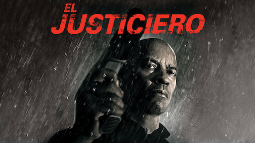

Inicio
“El Justiciero” es una película de acción y suspenso protagonizada por Denzel Washington, dirigida por Antoine Fuqua y escrita por Richard Wenk. Cuenta la historia de un ex militar y del servicio clandestino de la agencia de inteligencia de defensa, jubiliado que reside en Boston, Massachusetts, el cual decide impartir justicia por mano propia. Su estilo visual crudo y su enfoque en la justicia moral la convierten en una obra intensa y reflexiva.